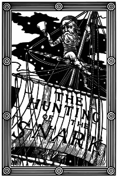
| Автор: | Льюис Кэрролл |
| Жанр: | литература абсурда |
| Язык оригинала: | английский |
| ISBN: | ISBN 5-93381-117-3 |
NB. Имена и основные понятие, где не оговорено иное, указаны по переводу Г. М. Кружкова.
Интересно, что все главные действующие лица имеют имена, начинающиеся с буквы B (в оригинале). В переводе Кружкова эта тенденция выдержана — все начинаются с Б.
Стихотворение типично для поэзии Кэрролла — ловкие рифмы, грамматически верно построенные предложения в сочетании с абсурдными с точки зрения логики событиями, во многом полубессмысленным содержанием, частым использованием самовыдуманных слов, таких, как Снарк. Это — самое длинное стихотворное произведение Кэрролла. В отличие от Алисы, прозы, чередующейся со стихотворениями, «Снарк» — от начала и до конца написан в стихах. Поэма разделена на 8 разделов, или «воплей» (fits, игра слов, основанная на устаревшем «fitt», означающем «часть песни», и «fit» — «судороги»):
Переплыв море по карте Балабона — чистому куску бумаги — охотники прибыли в странную землю. Булочник рассказывает, что его дядя однажды предупреждал его, что при ловле Снарка стоит быть осторожным, так как можно перепутать Снарка с Буджумом, и тогда
Я без слуху и духу тогда пропаду
И в природе встречаться не буду.
С этими мыслями они приступили к охоте. Вскоре Браконьер и Бобер становятся друзьями, Барабанщик засыпает, а банкир сходит с ума после встречи с Кровопиром. Наконец, Булочник кричит, что нашел Снарка, но, когда остальные добираются до него, он таинственно исчезает
Видно, Буджум ошибистей Снарка!
For the Snark was a Boojum, you see.
Существует около десяти стихотворных переводов поэмы на русский язык. Каждый перевод имеет собственный набор русских эквивалентов для английских названий и терминов. Все переводы имеют смысловые отклонения, которые впрочем не изменяют общей сюжетной линии.
Только сам Снарк имеет одинаковое написание почти во всех вариантах.
Эквиваленты
| Оригинал | Перевод Г. М. Кружкова (1991) | Перевод В. Гандельсмана (2000) | Перевод С. Шоргина (2004) | Перевод Ю. Лифшица (2006) | |
| Boojum | Буджум | Злодюка | Бабай | Бу́джум | |
| Fit | Вопль | Песнь | Вой | Истерия | |
| Bellman | Балабон | Беллман | Спикер | Буйноглас | |
| Butcher | Браконьер | Мясник | Стрелок | Бойскотт | |
| Banker | Банкир | Банкир | Счетовод | Банкир | |
| Bonnet maker | шляпный Болванщик | Портняга | Слуга | Беретошвей | |
| Barrister | Отставной козы | Барабанщик | Юрист | Судейский | Балабол |
| Broker | Барахольщик | Бухгалтер | Старьёвщик | Биржевик | |
| Beaver | Бобёр | Бобёр | Сурок | Бобёр | |
| Baker | Булочник | Пекарь | Стюард | Булочник | |
| Boots | Билетер | Сапожник | |||
| Jubjub | Хворобей | Фьюжас | Соловей Разбойник | Джу́бджуб | |
| Bandersnatch | Кровопир | Бармаглот | Бандюгад | Бурдосмак |
В 1940-х годах появилась такая теория, что Снарк — это атомная энергия (и вообще научный прогресс), а Буджум — ужасная атомная бомба (и вообще все, чем мы за прогресс расплачиваемся).[1]
«Снарк» писался для детей, но известным математиком. В нем можно увидеть как принца, в котором разочаровалась маленькая девочка, так и страшную атомную бомбу.
«Когда ты прочтешь „Снарка“, — писал Кэрролл одной из своих приятельниц-девочек, — то, надеюсь, напишешь мне, как он тебе понравился и все ли было понятно. Некоторые дети в нем так и не разобрались. Ты, конечно, знаешь, кто такой Снарк? Если знаешь, то скажи мне, потому что я не имею о нем никакого представления» {Цит. по Падни Дж. С. 102.}.[2]
Он также говорил: «Под Снарком я имел в виду только то, что Снарк — это и есть Буджум… Я хорошо помню, что когда я писал поэму, никакого другого значения у меня и в мыслях не было, но с тех пор люди всё время пытаются найти в Снарке значение. Мне лично больше всего нравится, когда Снарка считают аллегорией Погони за Счастьем».
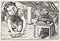
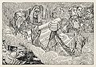
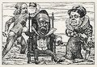
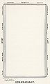
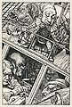
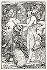
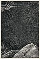
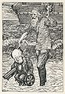
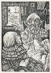
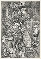